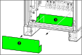
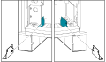

Remove the two plates in the bottom of the UPS cabinet.
Figure 1. Front View of the UPS Cabinet
Remove the front part of the conduit box in the bottom
of the UPS cabinet.
Remove the rear part of the conduit box in the bottom of
the UPS cabinet.
Figure 2. Front View of the UPS Cabinet

Remove the indicated brackets in the right and left side
of the UPS cabinet. Discard the brackets, but save the screws for
installation.
Figure 3. Front View of the UPS Cabinet

Only in top entry systems with top entry cabinet placed
next to the UPS cabinet: Cut the three small tabs on the plate
in the right side of the UPS cabinet and remove the plate to create
more access space for cable entry.
Figure 4. Front View of the UPS Cabinet and Top Entry Cabinet
Only in bottom entry systems: Drill holes and install
conduits for power cables and for signal cables in the bottom of the
rear part of the conduit box. Conduits are not provided.
DANGER
Hazard of electric shock, explosion, or arc flash
Do not drill or cut holes for cables or conduits with
the conduit box installed and do not drill or cut holes in close proximity
to the UPS.
Reinstall the rear and front part of the conduit box with
three screws in each side and two screws in the front. Note that the
conduit box is installed in a lower position now that the brackets
are removed.